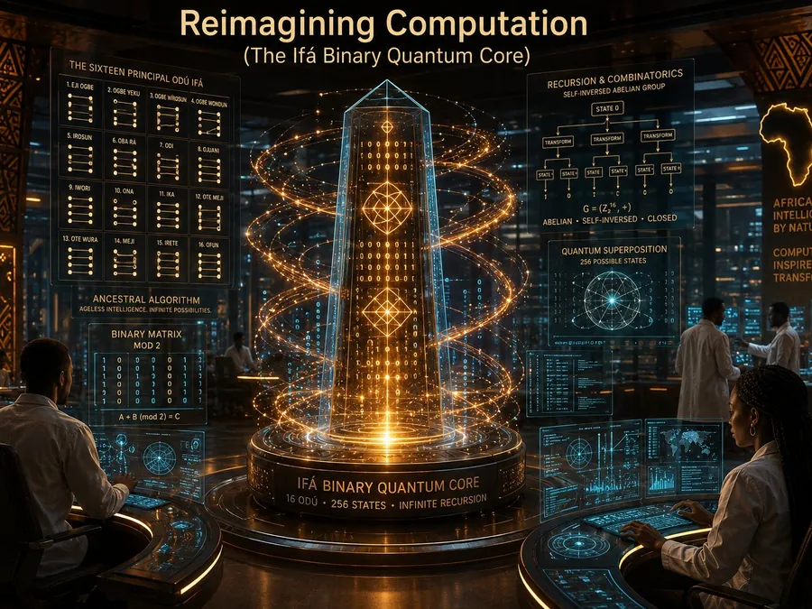

Rethinking Africa. Reclaiming Intelligence. Reimagining the Future.
A research-driven media platform exploring African development, knowledge, governance, culture and possibility from an African-centred perspective.

How were you taught to see Africa?
Seven questions, about ninety seconds. Discover which of the five African future-building profiles is yours, and receive the free manifesto.
Take the Africa Lens QuizFree. No payment, ever.
Rethinking Africa with Dr. Damola brings research, lived experience and African voices together to examine the systems shaping the continent, and to explore practical pathways towards African agency, excellence and renewal.
Trained Away
Why African education often prepares young people to leave local opportunities rather than transform them, and what an education designed from African realities would do instead.
Africa is not empty of intelligence
Its challenge is that much of its intelligence has not been sufficiently recognised, refined, institutionalised, financed and transformed into collective power. This platform moves beyond describing Africa's problems: it asks how they were produced, what sustains them, what knowledge has been neglected, and what practical alternatives can be built. Read more about the vision.
This is not the past. This is interrupted science.
The clay pot is not a symbol of poverty; it is an off-grid thermodynamic device, refined through generations of empirical experimentation. Using AI speculative imaging, we project what African sciences should look like today, had their development never been violently interrupted.


What was interrupted can be restored. What was deferred can be recovered.
The story we are rethinking



Six major themes
Education & Knowledge
How education shapes African identity, ambition, work and possibility.
Governance & Institutions
How African states can build credible, accountable and culturally grounded systems.
Indigenous Knowledge & Innovation
How inherited knowledge can become contemporary science, enterprise and industry.
Work, Production & Excellence
Why Africa imports expertise and how local capability can be strengthened.
Culture, Identity & African Agency
How language, media, religion and global power shape African self-perception.
African Futures
How Africans can design cities, institutions, technologies and economies rooted in their realities.
What knowledge did your parents possess that your generation failed to inherit?
Submit your answerSelected responses appear on the site with the contributor's permission.
Many voices, one table
Scholars, artisans, students, entrepreneurs, elders, policymakers and the diaspora. Each month this platform features one African voice and the knowledge they carry. If that is you, or someone you know, tell us.
The written work
Articles, research summaries, reading lists and downloadable briefs sit alongside the episodes. This is what separates the platform from commentary: every claim can be traced to a source.
Africa's future cannot be imagined by one voice
Bring your research, experience, question or story into the conversation.
Meet Dr Damola

Dr Damola is a development economist, Afrocentric scholar, AI generalist, public policy strategist and gospel music artist with over 25 years of experience across government, academia and international consultancy. Through Rethinking Africa she brings scholarship out of restricted academic spaces and into public conversation.
For scholars, students, policymakers, professionals, creators, community leaders, members of the diaspora, and everyone committed to Africa's intellectual and developmental renewal.
Join the Founding 1,000
Be among the first thousand members of a movement to recover African intelligence and agency. Discover African-centred perspectives grounded in research, watch conversations with scholars and practitioners, and receive new episodes, articles and event invitations, beginning with the free 7 Days of Rethinking series.
No spam. Unsubscribe any time.
Help this initiative grow
Rethinking Africa with Dr. Damola is an independent initiative. Your support funds research, production, translation and the documentation of African knowledge, and it keeps this platform free for students and communities across the continent.
Gifts support an independent educational initiative and are not tax-deductible charitable donations. A summary of how funds are used is published annually on this site.
Partner with Rethinking Africa
Universities, research centres, cultural institutions, media organisations and development bodies are invited to collaborate on research, media and public-engagement projects.
Start a conversation